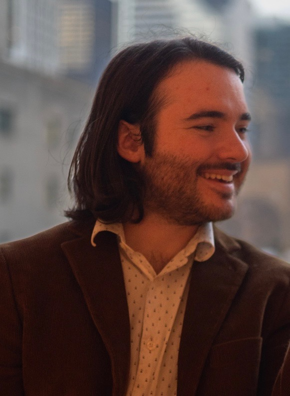

Director & Developer
Artistic Statement
I believe in this philosophy: people change people. That is what drives my art. I want to create work that changes people, and not just the people in the audience. I want the cast and the production team to come away making relationships and expanding their ideas on artistry and the world. I want the audience to have a mirror held up to them that, whether they like it or not, forces them to think about themselves, and, hopefully, inspires some change for the better. Those are the kinds of stories I want to tell and the experiences I want to create.
Biography
Tyler Robertson is a director and designer currently completing a double major in Directing for Theatre and Video Game Design and Development at Ball State University. With a focus on musical theatre, new works, and multimodal works, Tyler has directed productions ranging from contemporary musicals like Ordinary Days to youth theatre staples like Frozen Jr., and has dipped his toes into just about every aspect of production, from light and sound design to playwriting and stage management. He is willing to do whatever is needed for the production.
When not in the rehearsal room, he can be found working on his indie dev game projects (like Crytid Zoo), music directing his acapella group Sedoctave, or making YouTube videos on his channel Tyler Does Stuff!